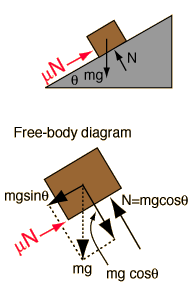

Mass on Incline With Friction

Application of
Newton's second law
to mass on incline.
For an incline at angle
degrees and coefficient of friction mu=
, the acceleration of the object down the incline is
Acceleration =
m/s
2
compared to 9.8 m/s² for freefall. Gravity would give it an acceleration of
m/s² down the incline in the absence of friction, but frictional drag subtracts
m/s
2
. If the height of the incline is h=
m, then the time to slide down the incline from rest would be t=
seconds, compared to a time of t=
seconds for a frictionless incline and t=
to drop from that height . The speed at the bottom of the incline would be
m/s compared to v=
m/s for a frictionless incline.
Expressions
****
Remove friction
Index
Newton's laws
Standard mechanics problems
HyperPhysics
*****
Mechanics
R Nave
Go Back